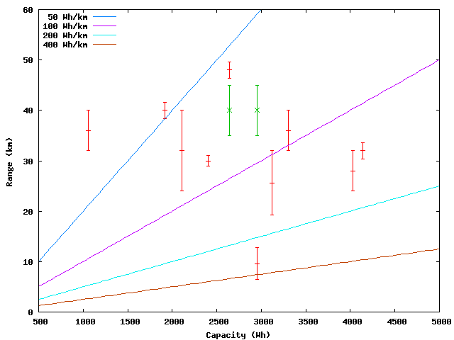
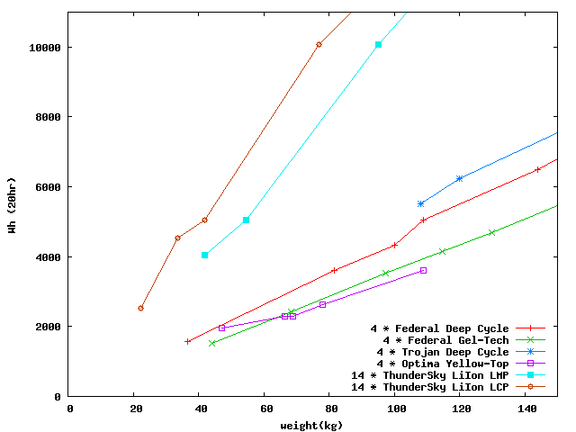
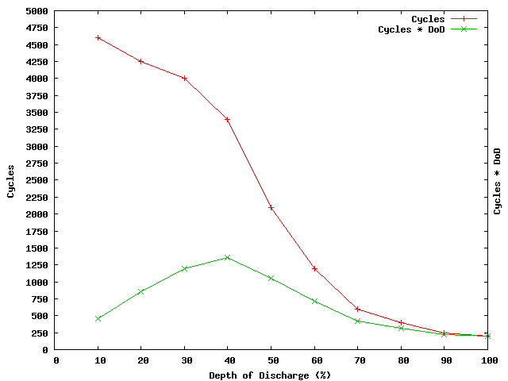
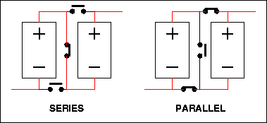

From my initial enquiry to the EV list ...
So far I'm thinking:
- Electric motor with 10-20hp peak and maybe 1-2hp continuous.
- Simple chain drive to rear wheel.
- About 80kg of sealed batteries in case it falls over -- maybe
Optima Yellow Top? Either a 48V or a 60V system.
- Some kind of twistgrip controller. Are regenerative ones
available in this power range?
- Some kind of onboard charger, so the bike can just be plugged
in to the 240V mains and left overnight / at work / etc.
- All shoehorned into a rolling chassis from a streamlined
250-400cc commuter would be about right ... kerb weight
about 160kg before, less than 200kg after I hope.
Does this sound reasonable?
I've gone through the bikes in the photo album and going by the stated
ranges and battery configs, the efficiency seems to vary enormously ...
between 50 Wh/km and 400 Wh/km! Anyone know a good rule of thumb for
a two-wheeled electric beastie?
I'd need to get a 'regular' range of maybe 40km (25mi) and a 'regular'
speed of 60km/h (38mi/h) out of it to make it a practical bike, and
maybe occasionally a 60km (38 mi) range or a 80km/h (50 mi/h) top speed.
Is this practical with the available tech, or will I just have to wait
for fuel cells or unobtainium batteries or something?
Thanks!
-----Nick 'sharks' Moore
Some investigation
Wh/km
I found a whole heap of data on electric bikes on the
Electric Motorcycles Photo Album, and tried to use this to work out what kind of Wh/km to expect.
As you can see from the graph and table below, there's quite a lot of variation:
| Battery | Range | Speed | Drain | Name | Batteries | Motor | Final Drive |
|---|
| V | Ah | Wh | km | kmh | Wh/km | Type | Ratio |
|---|
| 48 | 22 | 1056 | 51-64 | 64 | 29 | Jackal | SLA | ETek | Chain |
| 48 | 65 | 3120 | 32-51 | 77 | 76 | EMB Lectra | Optima D750S | Etek | Chain | 3.375 |
| 48 | 55 | 2460 | 48 | 80 | 55 | E-Scramler | PowerSonic 55Ah | Advanced DC | Chain | 2.53 |
| 48 | 40 | 1920 | 40 | 81 | 48 | 250XL | SLA 40Ah | Etek | Chain |
| 48 | 50 | 2400 | 30 | 86 | 80 | Xineta | Hawker 12V 50Ah | Cupex (perm) | Chain |
| 48 | 44 | 2112 | 24-40 | 88 | 66 | ReCycle | 22AH SLA (paired) | Etek | Chain |
| 36 | 115 | 4140 | 32 | 88 | 129 | ElectroCycle | trojan 12V TMH | Prestolite | Chain | 6 |
| 72 | 41 | 2952 | 6-13 | 100+ | 307 | BEM | Optima YT D51 | Advanced DC | Chain |
| 60 | 55 | 3300 | 32-40 | 100 | 91 | ElectricNinja | 55AH | Etek | Chain |
| 72 | 100 | 7200 | 27 | 104 | 265 | Piggy | Trojan 100AH | Advanced DC | Chain | 4.6 |
| 96 | 42 | 4032 | 24-32 | 128+ | 144 | REVision | Hawker Genesis | Advanced DC | Shaft | ~3 |

Of course, this is total battery Wh, not actual Wh used to travel that
range. There's a huge variation in claimed efficiency though ... perhaps
different depth-of-discharge (DoD) strategies, different motors,
different gearing, aerodynamics all add up.
Choosing Batteries / Optimizing Optimas
| 
| 
| |
I'll probably be stuck with the lower lines on the graph, eg: Optima YTs
or Federal Gel-Tech, because the deep-cycle types don't offer enough
peak amps. Such is the way of engineering tradeoffs!
|
Found some good numbers of Optima YTs discharge cycle, and it seems
like about 40% DoD should give the best lifetime in km.
|
Practicalities
Okay, let's assume for the sake of the argument I can get 100Wh(cap)/km ...
assuming a 50% DoD, that's really a consumption of 50Wh/km, at say 50km/h
that's 2500W, which sounds about right.
So for a ~35km range I'd need 3.5kWh off battery capacity ...
| # | Type | Capacity (total) | Weight
(total) | Size
(each) | Price Retail
(total) | Value |
|---|
| V | Ah(20hr) | Wh(cap) | CCA | Peak kW | kg | mm | AUD | Wh / $ |
|---|
| 4 | Optima YT D31 | 48 | 75 | 3600 | 900 | 43.2 | 108 | 325*165*238 | $1840 | 1.9
| | 4 | Federal Gel-Tech 8G24 | 48 | 73.6 | 3530 | 410 | 19.7 | 97 | 276*171*251 | $1200 | 2.9
| | 5 | Optima YT D34 | 60 | 55 | 3300 | 750 | 45.0 | 97.5 | 254*178*198 | $1925 | 1.7
| | 6 | Federal Gel-Tech 8G22NF | 72 | 50 | 3600 | 245 | 17.6 | 103 | 238*140*235 | $1434 | 2.5
| | 14 | Thunder Sky LiIon TS-LMP80 | 50.4 | 80 | 4032 | ?200? | ?10? | 42 | 220*145*61 | ?$2000? | ?2?
| | 14 | Thunder Sky LiIon TS-LMP200 | 50.4 | 200 | 10080 | ?200? | ?10? | 95.2 | 285*182*100 | ?$5000? | ?2?
|
... fitting them into a bike-sized
vehicle won't be easy. Cardboard models seem the way to go. I've added in LiIon battery options because they might be a good option ... they seem to be about the same $/Wh but half the kg/Wh. On the down-side, they require a per-cell
Battery Management System. See Victor's CRX under 'Links:' below ...
Motor and Drivetrain
This is a bit out of date, as the Etek M7 has been replaced with
a couple of new contenders: from B&S, the Etek RT and Mars Brushless, and from Perm the PMG132. So the following is a bit out of date. Needless to say, the technology has only gotten better.
The simplest setup is likely to be the permanent-magnet
Etek M7 from Briggs & Stratton. They're pretty widely used in the electric motorcycle world. There's
quite a bit of info on the Etek at robotcombat.com and powerped.com.au (scroll down) and it looks like it'd be easy enough to mount in a motorcycle application.
The Etek will spin at 72RPM/volt, so at 48V that's a top speed of 3456RPM.
A motorcycle wheel&tyre is about (hand wave) 2m in circumference.
Front sprockets go down to about 13 teeth, and rears up to about 57,
so we'd have a max speed of 3456 RPM * 13/57 * 2 m/R = 26 m/s, or about
94 kmh flat chat. Sounds about right, perhaps a little high, but
to get a higher final drive ratio would mean adding an idler shaft
or similar, and I'd rather not. On the other hand, if you were
going to add an idler shaft, you could add it coaxial to the
swingarm pivot, to keep the chain/belt lengths constant.
Motorcycle sprockets are generally splined to fit a shaft, but it's probably
easier to machine a sleeve keyed on the inside to fit the Etek
output shaft and stepped on the outside to make it easy to braze/weld
the front sprocket to the sleeve.
Regeneration!
|
One of the disappointing things about a permanent magnet setup is that
it makes it hard to do regenerative braking. Since motor voltage is
proportional to motor RPM, the only time you'll get a voltage high
enough to recharge the batteries is revving the motor beyond its normal
maximum RPM ... and on a direct-drive machine, that'd only be when
rolling down a hill quicker than the bikes top speed ... not likely to
be a common occurance ...
One way around this is to use a "Contactor controller", or series-parallel
switch. Put simply: split the pack in half, and wire these halves up so
that they can be connected in series or parallel. This provides two
'gears' ... in parallel, maximum current is increased for more torque,
and in series maximum voltage is increased for more top speed.

Pretty obviously, fuses would be needed to prevent the batteries
exploding if a contactor stuck or was closed at the wrong time.
And, of course, dropping down into Parallel reduces the battery voltage,
so if you've sped up to top speed in Series and then shift into Parallel,
there's sufficient voltage to regeneratively charge the batteries. It's
not exactly sophisticated, but it's a start. The idea can be extended:
| Num Batteries |
Num Gears. |
Gears
( Nseries * Nparallel ) |
Top SpeedsWith top gear top speed = 100 |
| 2 |
2 |
1 * 2 |
2 * 1 |
|
|
50 |
100 |
|
|
| 4 |
3 |
1 * 4 |
2 * 2 |
4 * 1 |
|
25 |
50 |
100 |
|
| 6 |
4 |
1 * 6 |
2 * 3 |
3 * 2 |
6 * 1 |
17 |
33 |
50 |
100 |
| 8 |
4 |
1 * 8 |
2 * 4 |
4 * 2 |
8 * 1 |
12 |
25 |
50 |
100 |
The complexity gets out of hand pretty rapidly. Six is probably the largest
useful number ...
Just as the selection of series vs. parallel is a bit like the selection
of gears in a gearbox, the two likely strategies are manual or automatic
switching. For manual switching, a control would select which contactors
to close, giving a selection "Parallel-Neutral-Series" just like 1-N-2 on
a motorcycle gearbox. The throttle setting would provide PWM control
over power and regen. For automatic switching, a controller would
monitor throttle position, battery voltage and motor voltage, and
select the appropriate 'gear' and PWM setting.
Someone on the list pointed out that this would be a Bad Idea with most
controllers: the input stage capactitors need 'precharging', generally
done by a resistor in parallel with the contactor. Switching voltages
would be messy. Instead, if you wanted to do S/P switching, you'd need
a controller designed for the job, with input stage capacitors _before_
the switch. Since the S/P switching is mostly there to do regeneration,
and since the controllers people are talking about don't do regen anyway,
it's not a big deal -- I'd need to build my own controller anyway!
Old Shopping List
Kawasaki GPX250 or similar rolling chassis
inc. minor repairs | trading post? | $500 |
| Chain & Sprockets (motorcycle) | bike shop | $250 |
| KIT: Etek M7, Alltrax controller, charger, throttle | currietech.com.au | $2400 |
| 4 * Optima YT D31 | ? | $2000 |
| Motor mount plate & front sprocket carrier & battery cages | custom | $300 |
| Sundries: (lights, paint, shrinkage) | | $500 |
| TOTAL: | $5950 |
|---|
... which, sadly, probably puts this project out of my league. Compared
to buying a decent GPX250 for $3000 and $3000 worth of fuel, it'd take
perhaps 40,000km to break even ... and given the range (40km or so),
that's 1000 discharge/recharge cycles (perhaps 3 years) and by then the
batteries are probably half shagged. Oh well. It'd be a nice toy :-).
New Shopping List
On the other hand, if the batteries and controller could be gotten
cheaper, perhaps by sponsorship on the batteries and by importing parts
directly from the States (I've seen Etek+controller for US$700), perhaps
it'd break even ... perhaps this explains why most of the E-vehicles seem
to be from the States, even though fuel is cheap over there.
The constant torque of a DC motor, as compared to the jerkiness of a
ICE, probably means I could get away with a light chain. Belt drive
is another option, but finding matching ratios may be a problem.
Actually Cloud Electric
have #40 sprockets down to 11 tooth (on a 7/8" shaft) and up to
60 teeth on a four-hole rear sprocket. So ratios up to about 5.5:1
might be possible.
Kawasaki GPX250 or similar rolling chassis
inc. minor repairs | trading post? | $ 500 |
| Chain & Sprockets (#40) | Cloud Electric | $ 100 |
| KIT: Etek M7, Alltrax 300A, etc | Cloud Electric | $1200 |
| 4 * Gel-Tech 8G24 | Solar Online | $1200 |
| 2 * 24V 6A Smart Chargers | Jaycar | $ 200 |
| Motor mount plate & battery cages | custom | $ 200 |
| Sundries: (rattlecan paint) | | $ 100 |
| TOTAL: | $3500 |
|---|
... which makes it look a lot more tempting ... hmmmm ...
LiIon Batteries
The limiting factor on the above is the sheer weight of batteries
it'd need to lug around, so I'm considering what could be done
with LiIons.
Thunder Sky
have Lithium cells at prices competitive with a Optima YT pack.
Apparently they're Cr-F-Li chemistry.
TS-LCP50AHA 3.6V 50Ah 1600g 190x116x46 US$98.
TC-LCP100AHA 3.6V 100Ah 3000g 220x145x61 US$200.
To get to a nominal 48V (for the Etek) it'd need about 14 cells
in series: so that'd be 42kg / US$2800 for the 100Ah pack.
One limitation of these cells is that they become quite inefficent
past 2CA discharge, eg: you shouldn't try to get more than 100A
out of a 50Ah cell. This makes a series/parallel setup essential
to run an Etek motor ... with two banks in parallel, you could source 200A
without sagging much. Another possibility is to use UltraCapacitors
as an intermediary.
The other problem is that LiIon batteries need a per-cell Battery
Management System. Mostly what this seems to be is a method for
making sure that the voltage across a 3.6V nominal cell never gets
above about 4.3V.
The easiest way to do this is to shunt current past the cell,
with a circuit which is more-or-less a 'sharper' version of a Zener
diode.
Simple charging system: A power supply capable of 32V 10A sits across
a bank of 7 Lithium cells, each of which is clamped to 4.3V. While
they're charging, the bank voltage will be <30V. When all shunts
are shunting, bank voltage will have risen to 30.1V, at which point
the charger can turn itself off.
These batteries apparently like to be variable current charged, so
the one power supply can switch once a minute between the two banks.
Now, admittedly, that's a 320VA PSU we're talking about, so it's still
no lightweight. But it's not a welder either, and it doesn't have
to be too sophisticated since the clampers do almost all the regulation.
They also have integrated packs with built-in charger at very good prices.
Two of the 24V packs seem the obvious easy solution to my e-bike's
power needs, but I'd like something which could handle regeneration ...
TS-IC36V18AH 36V 18Ah 7200g 415x97x132 US$300.
TS-IC24V50AH 24V 50Ah 18kg 405x122x202 US$700.
TS-IC24V90AH 24V 90Ah 24kg 490x120x217 US$1000.
... still, it might be an effective way to get started without building
too much fancy stuff. Two 24V 90Ah packs, a series/parallel
contactor setup on a 'gear shift' (no clutch, so left hand has some
free time) and it'd be away! About the same price as 4*Optimas + 2*chargers,
slightly better range and half the weight. Sounds like
a pretty good deal. It'd mean I could move to a lighter chassis, too
-- now, a Gilera CX125, that'd be cool! Pity they're a little on the rare side.
LiIon Shopping List:
Light motorcycle rolling chassis
inc. minor repairs | trading post? | $ 500 |
| Chain & Sprockets (#40) | Cloud Electric | $ 100 |
| KIT: Etek M7, Alltrax 300A, etc | Cloud Electric | $1200 |
| 2 * TS-IC24V90AH 24V 90Ah batteries w/ inbuilt charger | ThunderSky | $2666 |
| Motor mount plate & battery cages | custom | $ 200 |
| Sundries: (rattlecan paint) | | $ 100 |
| TOTAL: | $4766 |
|---|
Links
Stuff:
Other People's EVs:
EV Mailing List(s):
Australian Suppliers:
International Suppliers:
High-tech doodads:
|
|
|
{kind=link}
{kind=link}
{kind=link}